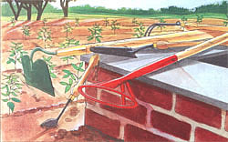
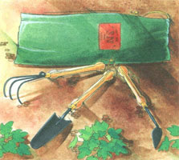
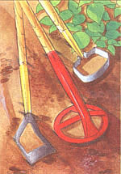
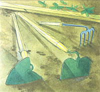
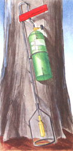

A review of this season's garden goods.
In their home garden catalogs, most large, commercial seedsmen are coming to acknowledge the burgeoning popularity of the natural, organic method among gardeners who are determined to assure their families a safe and healthful food supply. Industry giant Burpee - although a proud relation of Luther Burbank, America's preeminent scientific garden-plant variety developer - offers wildflower seed mixes and several beneficial insects, such as ladybugs, that will consume the aphids on your green peas. They, along with Harris Seeds, Stokes, and others, have long offered organic gardeners the option of buying seed that is untreated, lacking the red or green dyed fungicide coatings intended to protect seed against rot in cool, wet spring soil. But several smaller but growing firms are devoted to supplying native ground-covers and natural pest-deterrents by the score, as well as seed that is not only untreated but grown organically - in natural, compost-enriched soil and without harsh chemical fertilizers, or pest or disease controls. Some specialize in non-hybrid heirloom open-pollinated seed varieties, and all offer a thoughtful selection of tools and equipment for home gardening.
Notable among the organic-garden-friendly seed and equipment houses are Johnny's Selected Seeds, Peaceful Valley Farm Supply, and Seeds of Change. For these firms and all other mail order merchants cited below, full addresses and contact points are given in the source list at the end of the article. Most offer colorful print catalogs that are free by mail with a postcard or phone call; many are developing on-line catalogs for ordering via the Internet.
Every spring, anyone who has used mail order or who subscribes to magazines is deluged with ads for some Madison Avenue marketeer's latest idea for a cute new gardening hand tool. Most claim to eliminate the work by putting a novel twist into the blade or handle of a traditional implement.
Most Garden Maggots and Ho-Ho Hoes are used once or twice, then tossed into the cobwebs at the back of the equipment shed when they prove to be inferior to a conventional design that is the result of ten thousand years of mankind's hard labor in the fields.
Now and again, we do see genuine innovations and worthwhile improvements in design, manufacture, or distribution of established, use-proven tools.
It's hard to find good, quality hand-digging tools in most retail outlets. Ames and other major domestic tool manufacturers most surely do produce top-quality hand tools with thick, toughened-steel blades forged with long sockets or full or half-length steel straps on fire-hardened white ash or the new lifetime fiberglass handles. But these professional-quality tools are produced in small quantities, professionally-priced at $75 or so, and distributed mainly to folks in the land scaping and heavy construction trades who use them hard every day to earn a living. Most hardware and mall stores order the manufacturers' lighter, massproduced consumer lines. As a result, most serious gardeners have to shop for superior tools in the quality tools mail order catalogs.
Several Ames designs, as well as their own brand of full strap, ash handle, and all-steel nursery tools, are listed in the catalog of Sensible Tools for the Serious Gardener by A. M. Leonard of Piqua, Ohio. Unlike better known, more promotional, glossy, full color, upscale garden-goods catalogs, Leonard features tools that work, rather than imported copper watering cans and gloves with the thumbs dyed green.
Several old-line British firms still make high-quality gardening tools by hand, most notably beautiful garden forks with forged tines and square-ended spades featuring flat foot-steps welded on the blade tops, all with clear, white ash D handles. The Bulldog brand was marketed by North American mail order seedsmen, but the latest entrant is Spear & Jackson, a firm that has been hand-working steel in Sheffield, England, since 1760. Their Sovereign line has all the quality features plus a long-lasting, no-stick, no-rust epoxy covering on the blades, reasonable prices ($35 to $45), and a fifty-year guarantee.
Much of the appeal of British tools is their sturdy appearance. You may find Spear & Jackson's bilious yellow stain and nubbly gray epoxy a little garish, but after a season's use and an application of preservative oil, the colors mellow. By then, you'll have found the tools' strength and utility so pleasing you wouldn't care if they came painted purple. In addition to short digging tools with D handles, you can get the same blades fitted with extra-long sixty-inch pitching handles.
Spear & Jackson tools are sold in the catalogs of Peaceful Valley in northern California, and other seed catalogs and garden tool outlets across the continent including Agway, a large farm co-op with stores throughout the Northeast.
The working end of a quality shovel or fork's wooden handle is shaved to a dull point to fit securely into long tubular sockets forged into the steel. But water loves to accumulate in the socket, wanting to rust steel and rot wood. With any of these tools, the weak, breaking point in the handle wood is at the top of the socket. Be sure to soak the handle - socket area in particular - in deck preservative and keep it limber with linseed oil, or mix up the old-time boat-builder's mix of equal parts Cuprinol, DAP or other Copperbase wood preservative, boiled linseed oil, and turpentine.
With backs that are beginning to show their age, we're especially pleased to note the longer-handled trowels, hand forks and hand hoes coming to market. They come in twelve-inch planting lengths or eighteen-inch cultivating lengths. Snow & Nealley of Bangor, Maine, retail markets a three-piece set of twelve-inchers in a green canvas bag at about $10 per tool. Each seed or garden tool catalog seems to have chosen a selection of long-handled tools that appeals to its own staff and customers. Seeds of Change, for instance, lists a handforged Dutch hand hoe with a two by four inch triangular head that "is balanced to give you power where you need it - on the inside of your arm."
Have you longed for years for one of those elegant Felco anvil-blade pruners - the kind that has red handles, massive Swiss-steel blades, and a flat steel coil spring behind the hinge and that comes in both right and left-handed versions - but couldn't justify the $40 price? Me too.
Your pocketbook may be pleased to note that Felco's patents have run out - on pruners and their folding-blade pruning saw as well - and admitted direct copies are coming to market. Look for copies in your garden catalogs.
Most commonly available garden hoes have fairly large blades and are either too flimsy for serious work or too heavy, clumsy, and shallowly angled for light surface-hoeing in loose organic soil. The typical blade shape and socket configuration is a hybrid of the traditional heavy-bladed cotton hoe designed to chop weeds out of hard Georgia clay and the mason's hoe - that in its purest form sports a shallow-angled blade of thick steel with a hole in each fluke for easier flow through a barrow of wet concrete. Such a generic hoe is fine for general use. More refined designs have been developed for specialized applications over the millennia.
For years, I've used an onion hoe to nip out young weeds. This blade was developed to get between close-set onions, so it is narrow and bent sharply back from the handle line. It makes a shallow, pulling cut that slices off weed stems just under the soil line. My newest is an exclusive offer ing of Lehman's non-electric, good neighbor heritage catalog out of the Amish country around Kidron, Ohio. Designed by an Amish saw maker and gardener, the hoe's two-inch-high blade comes in five, six, and seven-inch widths, and is sharpened on the bottom edge and both sides. The wide edge is bent back from the handle line at a 70° angle so it will cut a shallow, weed-removing slice off the soil's surface. The blade is light enough that it can be held vertically with an easy grip so the narrow side-edges can get in between closely-set plants. The Swedish saw-steel blade retains a cutting edge and is easily sharpened during work with a scythe, wetstone, or file. I carry a Schrade Honesteel, a metal-ceramic sharpener that comes in a belt sheath.
New last year was the colinear hoe, a variation on the narrow-bladed onion hoe. This is one of several European-style tools designed by master gardener and author Eliot Coleman and made by the Swiss tool manufacturer REAL (pronounced Ray'AL). Eliot extended the handle and revised the blade angle of his colinear hoe so that a gardener of normal modern height could weed the garden without stooping. Traditional tool handle lengths hark back to the 1900s, when Americans were shorter in stature. Colinear is a two-dollar word meaning that the blade cuts almost parallel to the soil surface, describing the same path along the soil line as the gardener's arm motion. The handle is sixty inches long and the thin, seven-inch-wide blade of high-tempered spring steel can be replaced when it wears out. You have to grind off a pair of rivets; replacement blades come with new rivets that need to be peened flat to affix the new blade to the handle ferrule. The colinear hoe is a rarity: an innovative, top quality tool sold at a reasonable price, around $30.
From Johnny's, Peaceful Valley, and other purveyors.
Most hoes work only on the pull stroke. Unless you move backwards, you tramp on newly-loosened soil, replanting weeds just grubbed out. There's something to be said for a hoe that functions on both the forward and backward strokes.
My own favorite is the traditional Dutch scuffle or stirrup hoe - demonstrated to me thirty years ago by the senior Bill Corey in Upper Nichewaug, Massachusetts. The blade is all steel and shaped exactly like an English riding stirrup, with a socket welded to the top and the flat foot-rest angled at about 70° and sharpened on both edges. It was designed to cultivate down the rows between close-spaced tulip-bulb rows, as Bill explained. You can work the four to seven-inch-wide blade easily in good soil with a gentle rocking motion. The handle is raised slightly to set the blade at a down-angle to cut into the upper inch of soil while the handle is pushed forward. Then the handle is dropped and pulled back so the rear edge of the blade is set at the proper rearward-cutting angle. You just scuffle along in either direction as you work.
The only true Dutch hoe I know of just now is from Spear & Jackson. It comes with the same epoxy coating found on their digging tools, mentioned above. The tool works well, but compared with an older, uncoated example, I find that the epoxy thickens the blade and dulls its edges enough to require effort and attention that defeat the purpose of the tool.
A more commonly available design mounts a down-pointing U-shaped flat steel stirrup on a pair of hinges so that the blade moves in a small arc, adjusting its angle with each fore or aft stroke. The common versions clank, rust, and break easily. A high quality rust-resistant import by REAL is available in several sizes. It is lovely, but it still clicks loudly enough that I can't hear the corn growing.
REAL also manufactures several other European designs and more of Eliot Coleman's innovative ideas: a hook-blade cultivator like a grass sickle on a long handle that comes fitted with a copper bolt that adds trace quantities of essential Cu to the soil; a hoe with a thin, six-inch-square spring steel blade; robust three-tine cultivators in long and short-handled versions, and more. All are nicely designed and made, built to last, and priced very reasonably for high quality imports. Different collections are featured by Johnny's and Peaceful Valley, and some items are sold in other catalogs.
Several hoes you may have to search for include the Warren hoe with a heart-shaped blade that I use to dig planting trenches. I found nine (made by Ames) at the local Sears. A unique surfacing hoe once sold by Lehman's has a thin, sharp steel disc mounted on three prongs. On a long ash handle and painted Farmall red, it is the fastest hand-weeder I've ever used. I call it the "flying disc." Finally, Seeds of Change used to sell a diamond hoe with a "T" on the handle so you can bury the handle in your gizzard and bull through the hardest soil. Do a few abdominal exercises before tackling one, though.
We seaside gardeners have long known that ocean kelp provides negligible NPK, but does contain a readily available, balanced supply of readily-absorbed trace minerals that are absent from many soils, but, like the copper from REAL's hook-blade cultivator, are crucial in tiny quantities for healthy plant growth.
It is now known that cold-processed kelp extracts also contain many natural plant enzymes. Among them are cytokinin, auxin, and gibberellin. These powerful natural growth hormones offer us an organic substitute for the artificial gibberellic acid that is the foundation of most rooting hormone powders sold commercially. Try dipping your geranium cuttings in liquid kelp concentrate and trash the Root-It! Then spray the foliage with diluted kelp as a nutrient tonic. You must use the cold-processed kelp extract or concentrate, as heat-processing destroys the enzymes. Look for the term "cold processed" in the catalog listing. Algamin (soluble powder) and Maxicrop (powder or fluid) are trade names of two Norwegian brands of cold-processed kelp extract.
Cottonseed meal, a by-product of cotton gins, is a prime source of slow-release nitrogen that organic gardeners like Ruth Stout once used to feed the soil and compost, but since it takes such a potent brew of chemicals to control pesticide-resistant boll weevils and other pests of cotton these days, most commercial cottonseed meal has been rendered almost toxic to the touch with accumulated pesticide residue. Peaceful Valley has a supply from California organic cotton growers that is warranted to be poison-free. At a dollar a pound shipping, it's not cheap to get it from California to New England. Maybe we could swap some rockweed kelp.
Thanks in part to our readers, friends and allies in government, long-lived bug and weed-killers like DDT, which can damage every life form they contact, are history. But the environmental abuse they caused, plus not a little inflammatory rhetoric from segments of the organic and environmentalist movements, have branded as suspect any chemical sounding compound or any gardening formulation made or trade-named by one of the big petrochemical corporations.
Cases in point are a pair of relatively new chemicals derived from natural sources that act more effectively and selectively than some long-accepted organic compounds such as pyrethrin and rotenone - pesticides derived from tropical plants that can kill fish or hogs and irritate humans.
First is azadirachtin, an insect growth hormone extracted from the seeds of the neem tree of Southeast Asia and India's tropics, where it has been used by local farmers for eons. It repels some insects, causes others to quit feeding, and kills still others by interrupting normal metamorphosis - the stage-by-stage development of many bugs as they grow from egg to caterpillar, and others as they develop from pupa to adult. It is harmless to most beneficial insects and other life forms. Most notably, Neem is the first environmentally-benign spray that's reputed to keep Japanese beetles off pole beans and grape leaves, and off your prize roses, as well. It is sold under several names in different. formulations. All products either have "Neem" as part of the brand name or "azadirachtin" somewhere on the label.
Second are Roundup and Finale, universal herbicides that are not extracted directly from a natural source, but contain chemicals manufactured by naturally-occurring soil bacteria. They are made and marketed by subsidiaries of major international petrochemical corporations.
This stuff is not a toxin, but a sophisticated hormone-type compound that acts on plants' metabolism by interfering with the chemistry of photosynthesis. Within weeks, it kills nearly every actively-growing chlorophyll-containing plant it contacts clear down to the root. It dries quickly when applied as directed so not even small traces will leach into the water table even if rained on shortly after being sprayed. Plus, it biodegrades into naturally-occurring soil compounds within seven to ten days. Roundup, by Ortho, a unit of Monsanto, and Finale, by Germany's Agr-Evo, are available as concentrates or ready-to-spray. They can be found on the pesticide shelves of garden supply stores.
Before you buy or use these or any other chemicals, read the label. To date (early 1998), the instructions do not specifically prohibit use on food plants. But neither do they make recommendations as to how to use the concoctions in vegetable gardens. This suggests to the cynics on MOTHER'S staff that somebody - probably a lawyer - has a few informed doubts about their ultimate safety on food plants. Sprayed as instructed-sparingly and directly on plant leaves in sunny weather - the compounds can't get into the broader environment before they biodegrade. Adjoining growth can be protected with a piece of cardboard. They are widely used, and government-approved for grass and broad-leaved weed control by farmers and ranchers.
We have used both in trial runs. We used them to kill off a few persistent perennials, such as the invasive poison ivy that infests our old stone walls and a large dandelion intrusion into what passes for grass on my tiny front lawn. We also used them to set back encroaching sumac and poplars in the pasture and to kill persistent blackberries and deep-rooted burdock in and around the vegetable garden.
They work - almost magically. But I remain suspicious. For most of the garden, a deep, weed-killing mulch (See Mort Mather's article on page 28) or mechanical weed control is easier, cheaper, and healthier for soil, body, and soul. For our money, indiscriminate use of these chemicals is best restricted to ornamental plantings such as killing a land-waster lawn in order to establish a tallgrass prairie or wildflower meadow in its place.
A hot flame applied to newly-emerged seedlings will cook the young leaves and stems, shriveling them to a crisp. Annuals won't come back; established perennials may-once or twice. Flame-weeding was widely used in farming in the 1960s. I had a hand-pumped kerosene-fueled flame thrower back then and wanted to extol its virtues as a weeder and wasp-nest eliminator in the pages of a national gardening magazine. What stopped me was that I was told that flames might singe the earthworms and burn the loam.
In fact, during routine weeding, I never had to hold the flame on one spot long enough to singe anything but young weed leaves. It didn't bother the woody stems of well-established crops. Indeed, the flame was good to nip grass from between corn stalks and trim out inessential ground-level leaf-growth - that does nothing but harbor slugs and snails - from around the base of tomatoes, beans, and brassicas. Applied in early morning or after a rain, it could even be used on weeds peeking up through an organic mulch that might catch fire when fully dried out.
After several decades of disfavor, flame-weeders are back. They are powered by propane in those wasteful throw-away cylinders sold for torches and cookers. It can also be had in refillable containers of several sizes. I am allergic to insect stings and particularly like a flame-weeder for eliminating the aggressive paper wasps that stake out nest-building territories on the eaves of country buildings each spring, and do the same in hibernating crevices in the fall. They scare off interlopers by dive bombing, making a great buzz, and dragging their scratchy little bug-legs on your hide. If they get tangled in your hair they'll pop the back of your neck with the tip of their stinger. Ouch!
I always have a few wanna-be pet chickens, ducks, or geese who follow me around as I do the chores, waiting to pounce on insects I scare up in passing. The flame-weeder will singe the wings of eave-dwelling wasps so they fall to the ground and buzz around in circles till my pets find them.
New-generation flame weeders were pricey at first, and you can still pay $200 for some larger backpack models. But - as they are nothing much more than a common propane torch with a long nozzle - prices are becoming more reasonable. I got a version, good for stoop-work, from the Harbor Freight discount tool catalog for under $10. It does not have a large, row-wide flame like the backpack models or my old kerosene flame-thrower, but emits a larger version of the pencil flame of a propane torch. It can be used as a precision weeding tool that will even get in under lettuce plants to make steam that will scorch slugs and pop their eggs.
You'll find one or another model in the garden tools section of most seed catalogs this year.
The main pollinator of our fruit trees and garden plants, the European honeybee (Apis mellifera) is under assault on several fronts. Hybridization by super-aggressive Africanized killer bees that are invading from South America can render bee colonies in warmer climates unmanageable, and two parasitic mites, Varooa and the tracheal mite, are decimating both domestic and feral (gone-wild) honeybee-hives across the continent. Backyard beekeeping is suffering badly. Commercial honey producers and the migratory beekeepers who take their hives to fields needing pollination are hard-pressed to stay in business. Bee-pollination is crucial to millions of dollars of commercial agricultural production. Maine blueberries and California almonds are just two crops that flower so profusely but so briefly that the local pollinators can't handle the load; bumper crops are dependent on pollination by migratory bees trucked in for the flowering period and honey flow. The USDA and the Land Grant Universities are working hard to tame the Africanized bee strain and control the dual plague of mites. Scientists at Purdue University, Indiana's aggie school, are doing genetic research to isolate wild bee resistance to the mites and pass it on to the gentle Italian strain of Apis mellifera.
Beekeepers can keep out the Africanized bees by frequent requeening with young queens raised and mated in flying cages, but conventional mite control requires use of strong chemical miticides that are of questionable benefit and that no organic gardener wants in the honey that goes on the children's morning toast. Some organic beekeepers claim that fresh mint leaves placed in hives will repel the nasty little arachnids. We've seen no scientific confirmation, but we'll try it.
Many gardeners and orchardists have given up on the immigrant honeybee - Apis mellifera came over on the Mayflower or soon after - for the time being, and are doing their best to encourage colonies of native bees - both the many species of small, all-black, stingless native bee, such as the orchard mason bee and the several species of big, stinger-equipped bumblebee.
Neither native bee forms large honey-producing colonies. Both over winter as single mated females that raise small broods or a dozen or more solo young each spring. Adult orchard mason bees feed on nectar and gather pollen and garden-destroying caterpillars for their young. Bumblebees collect nectar and pollen for their small colonies. Both insects serve as effective pollinators for nearby fruit trees and for flowering garden produce.
You can offer bumblebees a place to nest by making birdhouse-sized boxes with three-eighths of an inch or half-inch holes drilled through the front, and filling them with loose cotton batting from an old mattress or seat cushion, or new-bought from a good fabric store. Place them in dry, sheltered places near the ground under your apple trees or beside the garden. Build only from natural, untainted components, such as aged, unfinished wood and real organic cotton, not from particle board and phony fiberfill. Pack the box loosely with cotton full to the top and tight to the entrance hole or all you'll get are paper wasps. If you use birdhouses with normal, bird-sized access holes, you'll be making birthing rooms for families of little brown field mice.
As common as bumblebees - but less conspicuous - are the dozen or more species of mason and carpenter bees found in every area of the continent. You've seen their little stingless black bottoms bobbing in your apple and squash blossoms. Beginning in the spring, females find or dig small holes in soil or soft wood. Their favorite spots include your old house or barn: they like to drill into the unfinished wood sheathing under clapboards or shingles.
They pack the holes with pollen or an anesthetized caterpillar, lay an egg to develop on the bee-food stash, and plaster the opening shut. My bug books say that some species line these little one-shot baby-bee incubators with flower petals! If I had a choice, in my next incarnation...
You can purchase pre-drilled bee-nesting planks and a supply of orchard mason bees (Osmia lignaria). This is a widespread species that thrives everywhere. Look for them in catalogs from mail order garden-supply firms that specialize in beneficial insects, such as Knox Cellars. They're available only during their November to March winter hibernation period, for about a dollar a bee.
Fellow wild and natural-gardening fans please take note: if the experience of South Americans who keep local honey-pot bees is any indication, the very existence of our native bees will be threatened anywhere the Africanized killer bees become established. These unwelcome invaders protect their nests aggressively - pursuing intruders for up to a quarter mile from the hive - and out-forage gentler bees. They perpetuate and pass on behaviors developed to survive the difficult liv ing conditions of the drought-prone African veldt. An Africanized bee works herself to death in two-thirds of the time it takes the gentle Italian bees that most beekeepers raise.
Those among us who seek to conserve natural diversity by saving heirloom seeds, reestablishing tall-grass prairies, or raising native butterflies or American bison should also do all we can to help protect our native bees.
For years, we have been able to spray broccoli and other members of the cabbage family with B.t. or Bacillus thuringiensis, a microbe that causes green cabbage loopers to quit eating and shrivel away to nothing. It is harmless to good bugs and most other life.
When teaching gardening seminars, I've been known to swig the stuff to prove its harmlessness to skeptics. Harmless or not, I must admit that it smells evil and tastes worse.
Now, we can find several specialized strains of Bacillus thuringiensis. M-Trak (restricted) is the trade name of Bacillus thuringiensis var. tenebrionis. It's effective against the nefarious Colorado potato beetle.
Another strain, Bacillus thuringiensis israelensis, controls mosquitoes and blackflies that breed in ponds and streams. It comes in floating wafers you just toss in the water. Yet another variety kills larvae and adults of fungus gnats. Maybe you've had the unpleasant experience of encountered these fellows; they're the horrid little black flies that sometimes swarm out of garden soil when you bring it indoors.
You'll also find several other organisms that control grasshoppers, whitefly, and more. Most seed catalogs offer a selection of biologicals. For the largest variety, consult catalogs of Peaceful Valley, Gardens Alive! and Planet Natural, formerly BBT - Bozeman Bio-Tech.
SOURCES
How to Have A Green Thumb Without an Aching Back by Ruth Stout (Vantage Press, 1955; republished since in the original and revised editions by several commercial houses).
Although all of these editions are out of print, they are available in used bookstores or from Internet booksellers.
Miss Stout advocated planting under a deep natural straw mulch that would discourage weeds, retain moisture, and keep soil temperature at a moderate level. This had an added benefit: it would also, if fed with a little cottonseed meal, eventually decay into naturally rich soil nutrients.
If fluffed and refreshed periodically, the straw also kept produce clean, and both bug and slug-free. It protected everything from bush peas and beans to tomatoes and eggplant as well as both sweet and Irish potatoes. The latter develop a smaller-than-normal crop of tubers right at soil level under a heavy mulch. These are easily grown and harvested.
The Wild Garden by William Robinson (Sagapress; Timber Press, Portland OR, 1994). Tel. 1-800-327-5680
The Orchard Mason Bee by Brian L. Griffin (Knox Cellars Publications, 1993)
Country Home Products, Meigs Road, P.O. Box 25, Vergennes, VT 05491. Tel.1-800-446-8746 Ryobi Outdoor Products, 550 North 54th Street, Chandler AZ 85226. Information: 1-800-3458746. Tel. 1-800-265-6778 Harbor Freight Tools, 3491 Mission Oaks Boulevard, Camarillo CA 93011-6010. Tel. 1-800-423-2567 Mantis; 1028 Street Road, Southampton, PA 18966. Tel. 1-800-366-6268 Lehman's, P.O. Box 41, Kidron, OH 44636 Tel. (330) 857-5757
W. Atlee Burpee & Co., 300 Park Avenue, Warminster, PA 18974. Tel. 1-800-888-1447 Harris Seeds, 60 Saginaw Drive, P. O. Box 22960, Rochester, NY 14692-2960 Stokes Seeds, P.O. Box 548, Buffalo, NY 14240-0548. Tel. (716) 695-6980 Johnny's Selected Seeds, Foss Hill Road, Albion, ME 04910. Tel. (207) 437-9294. http://www.johnnyseeds.com/ Peaceful Valley Farm Supply, P.O. Box 2209, Grass Valley, CA 95945. Tel. (916) 272-4769; http://www.groworganic.com/ Seeds of Change, P.O. Box 15700, Santa Fe, NM 87506-5700. Tel. (888) SOC-SEED. http://www.seedsofchange.com/ A. M. Leonard, Inc., 241 Fox Drive, P.O. Box 816, Piqua, OH 45356. Tel. 1-800-543-8955. http://www.amleo.com Gardens Alive!, 5100 Schenley Place, Lawrenceburg, IN 47025. Tel. (812) 537-8650. Fax: (812) 537-5108 Planet Natural, P.O. Box 3146, Bowman, MT 59772. Tel. (406) 587-5891. Fax: (406) 587-0223 Knox Cellars, 1607 Knox Avenue, Bellingham WA 98225. Tel. (425) 392-7536; http://www. access.com1~knoxclr/ . (Carries bees and The Orchard Mason Bee by Brian Griffin (see Books section above).
|
 Three-piece set from Snow & Nealley Tools. |
 Skuffle hoe, flying disk hoe, and stirrup hoe |
 Ames' warren hoe; common hoe; REAL'S four-tined hand cultivator. |
|
 Flame weeder |
 |
|